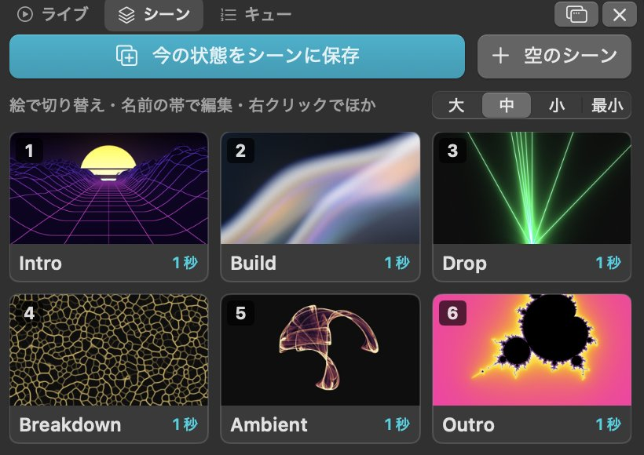
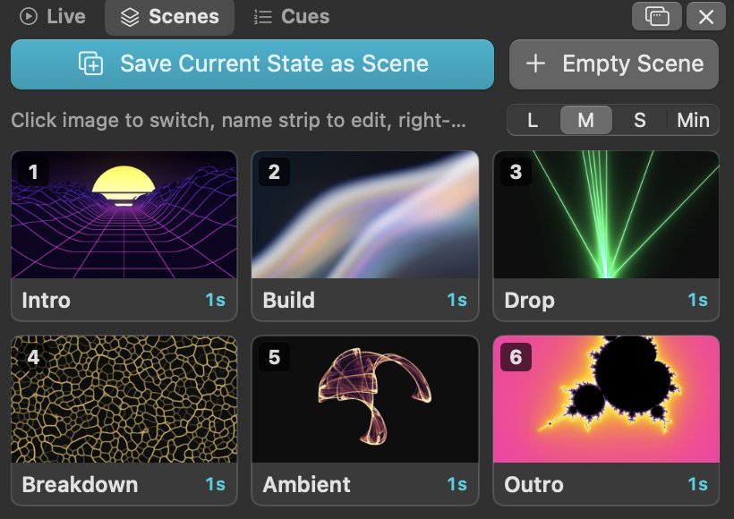
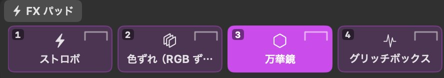
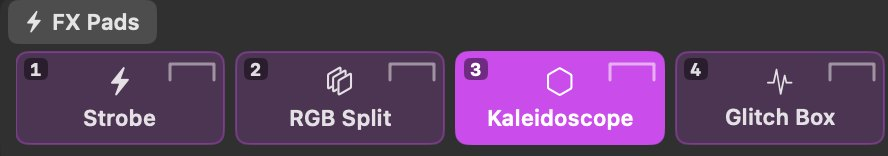
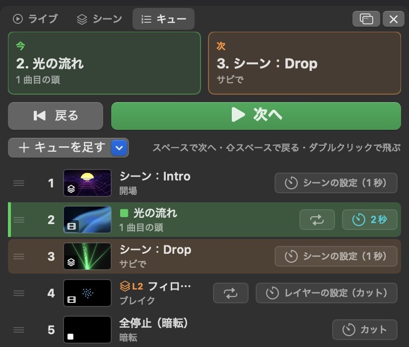
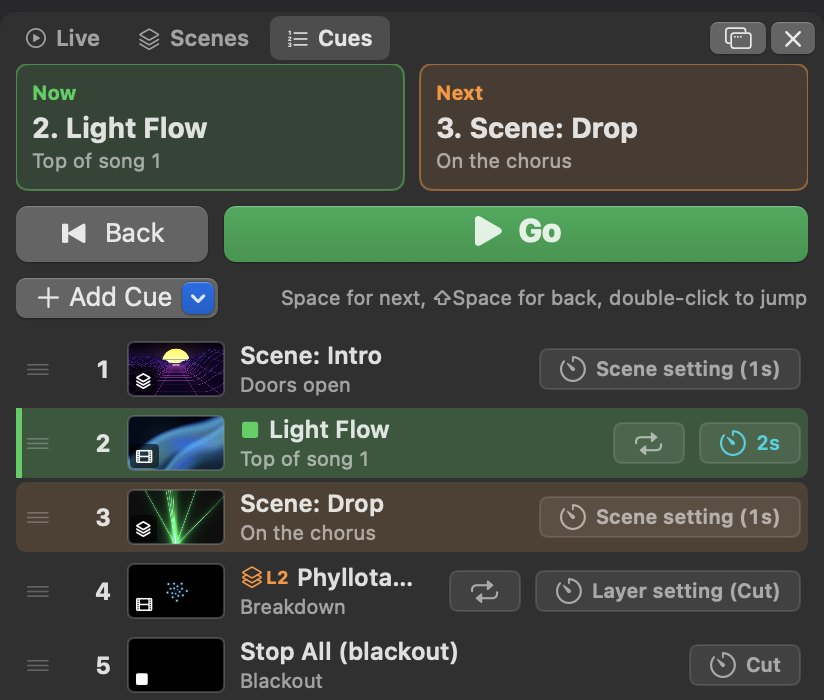
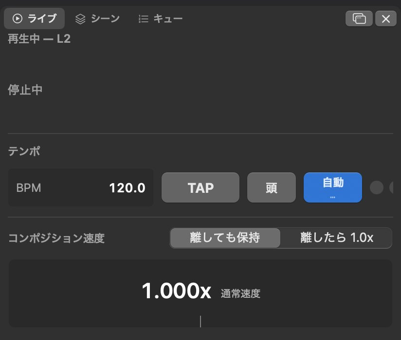
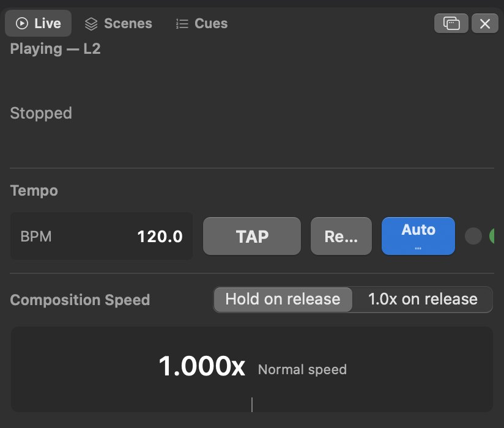

Halo VJ
Mac 用の VJ ソフト VJ software for Mac
- 無料Free
- Apple シリコン搭載 Mac ・ macOS 14 以降Apple silicon Mac · macOS 14 or later
- 日本語 / EnglishEnglish / Japanese
開発中のソフトで、AI と対話しながら作る「バイブコーディング」で作っています。大事な本番での使用は控えてください。→ 注意事項This is work-in-progress software, built by “vibe coding” — writing code in conversation with an AI. Please avoid using it for important live shows. → Notes
機能Features
クリップの再生Clip playback
レイヤーとクリップをグリッドに並べて、クリック・キーボード・MIDI で瞬時に再生できます。A grid of layers and clips. Triggers instantly by click, keyboard or MIDI.
対応フォーマットMedia
HAP は GPU でデコードするので、4K でも軽快に動きます。ProRes や静止画、GIF・WebP のアニメーションにも対応しています。HAP is decoded on the GPU, so even 4K stays light. ProRes, stills, animated GIF and WebP too.
ジェネレーターとエフェクトGenerators and effects
素材がなくても使えるジェネレーターを 48 種類、エフェクトを 43 種類収録。マスクや調整レイヤーも使えます。48 generators that keep moving without any footage. 43 effects, masks and adjustment layers.
音と BPMAudio and BPM
あらゆるパラメーターを、音量や BPM に連動させて動かせます。BPM は音から自動検出もできます。Any value can follow the audio level or the BPM. The BPM can be detected from the audio.
外部連携Connections
映像の入出力のほか、iPad や MIDI コントローラーからの操作、照明への出力に対応しています。Video in and out, control from an iPad or MIDI controller, output to lighting.
出力Output
複数プロジェクターへのマッピング（メッシュ・切り抜き・マスク）、エッジブレンディング、コーナーピン補正、テストパターン、録画に対応しています。Mapping across projectors (mesh, crop and masks), edge blending, corner pin, test patterns and recording.
入力IN
- HAP
- ProRes
- 静止画
- Stills
- ジェネレーター
- Generators
- Syphon
- NDI
- カメラ
- Camera
出力OUT
- ディスプレイ ・ プロジェクター
- Displays · Projectors
- Syphon
- NDI
- 録画
- Recording
- Art-Net / DMX
操作CONTROL
- MIDI
- OSC
- キーボード
- Keyboard
- 音 ・ BPM
- Audio · BPM
- 自動操縦
- Autopilot


シーンScenes
「今の状態をシーンに保存」を押すと、そのときの出力をサムネイル付きでまるごと保存できます。サムネイルをクリックすれば、そのシーンに切り替わります。 “Save Current State as Scene” saves the whole current output with a thumbnail. Click the image to switch to that scene.
保存される内容What a scene holds
- 各レイヤーで再生中のクリップ
- レイヤーとコンポジションの不透明度・ブレンドモード・位置・エフェクト
- 再生中のクリップのエフェクト・位置・サイズ・パラメーターのアニメーション
- The clip playing on each layer
- Opacity, blend mode, position and effects of layers and the composition
- Effects, position, size and motion of the playing clips
切り替えSwitching
- フェード時間（0〜8 秒）はシーンごとに設定可能。クリップはクロスフェードし、パラメーターもなめらかに変化
- 切り替え前後で同じクリップは、頭出しされずにそのまま再生
- キューに並べておけば、スペースキーで順番に送り出せる
- A fade time (instant to 8 s) per scene. Clips crossfade and values move smoothly
- Clips that stay the same are not restarted
- Line scenes up as cues and step through them with the Space key
編集Editing
シーンの名前部分をクリックすると、出力はそのままでシーンの内容を編集できます。編集中のシーンはプレビューで確認でき、変更はすぐに反映されます。 Click the name strip to edit a scene while the output keeps running. The preview shows the scene, and changes apply right away.


FX パッドFX Pads
パッドを押している間だけ出力の最終段にエフェクトがかかり、離すと元に戻ります。シーンとは独立しているので、シーンを切り替えてもそのまま使えます。 While a pad is held, its effects apply at the very end of the output, and they disappear when you let go. They work regardless of scene changes.
操作Playing them
- キーボードの
1〜0（変更可）や MIDI のボタンに対応。複数の同時押しも可能 - ストロボのように時間で変化するエフェクトは、押した瞬間からスタート
- かかり始めと消え際の時間（0〜4 秒）は、パッドごとに設定可能
- Press them with the
1–0keys (reassignable) or MIDI buttons, any number at once - Time-based effects such as strobe start from the moment you press
- Each pad has its own attack and release time (instant to 4 s)
登録Setting them up
「エフェクト」パネルからパッドにドラッグするだけで登録できます。1 つのパッドに複数のエフェクトを重ねることもでき、パッドは最大 16 個まで増やせます。 Just drag from the “Effects” panel onto a pad. A pad can hold any number of effects, and you can have up to 16 pads.
ポン出しClip triggering
クリップは押した瞬間に再生されます。キューに並べて順番に出したり、速度を手元で調整したりもできます。 Clips start the moment you press them. You can also line them up as cues to play in order, and adjust the speed by hand.
再生Playback
- クリック・キーボード・MIDI で、押した瞬間に頭から再生
- 列番号を押すと、その列を全レイヤー同時に再生
- レイヤーごとの「切り替え方」（トランジション）とフェード時間
Escでブラックアウト（フェード付き）。クリップは裏で再生を続ける
- Starts from the top the moment you click, press a key or hit a MIDI button
- Click a column number to play that column on every layer at once
- Per-layer transition and fade time
Escfor blackout, with a fade. Clips keep playing underneath
キューCues
- シーンやクリップを順番に並べて、スペースキーで次々に送り出す
- 「今」と「次」を大きく表示。
⇧スペースで 1 つ前に戻る - キューごとにフェード時間、きっかけのメモ、終わったときの動作
- 押し間違いの連打は 0.5 秒間受け付けない
- Line up scenes and clips, then send them out one by one with the Space key
- Now and Next shown large.
⇧Spacegoes back one - Per-cue fade time, a note for the cue line, and what happens at the end
- Accidental repeat presses are ignored for 0.5 s
速度（ピッチ）Speed (pitch)
- コンポジション速度を 0.25〜2.0x で調整。再生中のクリップ全体にかかる
- 「離したら 1.0x」にすると、ドラッグしている間だけ速度が変わる（DJ のピッチベンドのように）
Shiftで微調整、ダブルクリックで 1.0x に戻る- BPM 同期で、クリップを決めた拍数でちょうど 1 周させる
- Composition speed from 0.25x to 2.0x, applied to every playing clip
- With “1.0x on release”, the speed changes only while you drag — like a DJ pitch bend
Shiftfor fine control, double-click to reset to 1.0x- BPM Sync makes a clip loop exactly over a chosen number of beats




ジェネレーターGenerators
クリップと同じようにグリッドに置くだけで、リアルタイムに動き続けます。パラメーターは音や BPM に連動させることもできます。画質（高・3/4・半分）を選べば、GPU の負荷を軽くできます。 Place one as a clip and it keeps moving in real time. Values can follow the audio or the BPM. Pick the quality (full, 3/4 or half) to lighten the GPU load.
エフェクトEffects
クリップ、レイヤー、コンポジション、FX パッドのどこにでもかけられます。値はサイコロでランダムに変えたり、名前を付けてプリセットに保存したりできます（下の例は、ジェネレーターにかけたものです）。 Add them to a clip, a layer, the composition or an FX pad. Roll the dice for random values, or save a set of values as a named preset. (These examples are applied to generators.)
一覧でカーソルを合わせると、動く見本が出ます。よく使うものは星を付けて、いちばん上に並べられます。 Hover over one in the list to see a moving preview. Star the ones you use often to keep them at the top. サイコロとプリセットの使い方 →More about dice and presets →
インストールと注意事項Install and notes
インストール方法How to install
- zip をダウンロードして展開します。
- 「Halo VJ」を「アプリケーション」フォルダに移動します。
- 初回起動時にブロックされた場合は、システム設定 →「プライバシーとセキュリティ」→「このまま開く」を選びます。
- 以降は、アプリが自動でアップデートを確認します。
- Download the zip and open it.
- Move “Halo VJ” to the Applications folder.
- If macOS blocks the first launch: System Settings → Privacy & Security → “Open Anyway”.
- After that, the app checks for new versions by itself.
注意事項Notes
- 開発中のソフトです（バージョン 1.0 未満）。
- AI（Claude）と対話しながらコードを書く「バイブコーディング」で作っています。動作の検証は十分ではありません。作り始めたきっかけや作り方は note の記事に書いています。
- 大事な本番での使用は控えてください。使う場合は、必ず事前に手元で十分に試し、ほかの VJ ソフトなどの予備を用意してください。
- 表示言語は日本語と英語に対応しています（設定で切り替え可能）。
- NDI を使うには、NDI ランタイムのインストールが必要です。
- 不具合の報告や要望は GitHub の Issues へ。更新履歴は Releases で確認できます。
- Work in progress (pre-1.0).
- Built by “vibe coding” — writing code in conversation with an AI (Claude). It has not been thoroughly tested. Why and how it is being made: article on note (in Japanese).
- Please avoid using it for important live shows. If you do use it, test it thoroughly beforehand and have a backup, such as another VJ app.
- The interface is in English and Japanese (switchable in Settings).
- NDI requires the NDI runtime to be installed.
- Bug reports and requests: GitHub Issues. Changelog: Releases.